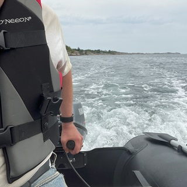

About Me
Tor aka dotBATman

A
Introtake
It's not a word, yet! March 2024

I answered a question on how I prefer to receive information on a new topic:
"I'd like a short Introduction that also presents the writer's Take!"
And once I clicked Post I realized that this could work as a shortcut for a lot of (hopefully) useful posts from me.
Tor Vigesdal - 2024